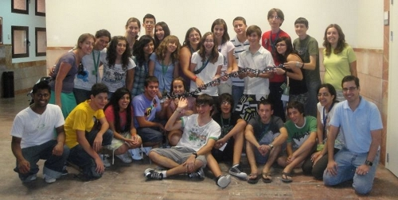
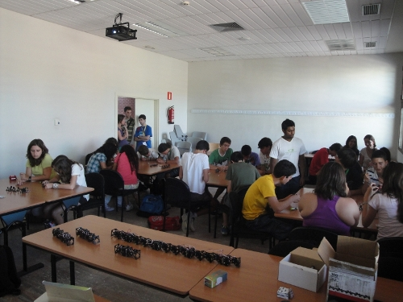

El jueves 22 de Julio impartimos un taller de robots modulares en la Universidad Carlos III de Madrid, como parte de las actividades del Campus científico de Verano, para estudiantes de 4º de la ESO (14-15 años).
Los estudiantes se dividieron en 5 grupos de 5. Cada grupo montó 3 módulos MY1 y con ellos construyeron a Minicube-I y Cube3 (configuraciones de 2 y 3 módulos respectivamente). Usando los pulsadores de la tarjeta Skypad podían cambiar los tres parámetros fundamentales de la locomoción: amplitud, frecuencia y diferencia de fase.

Les propuse el reto construir entre todos un robot gusano de 18 módulo y batir así el record de España, que anteriormente estaba en un robot de 12 módulos construido por mis estudiantes de robótica.
El resultado fue que construimos este impresionante robot de 1.5 metros. En este vídeo se pueden ver algunas escenas del taller y el mega-gusano en movimiento:

Todas la documentación empleada en el taller, el software y más fotos están disponibles en este enlace. Aquí podéis acceder a las transparencias en línea:
Jugando con robots modulares. Taller de robotica. Campus científico 2010
Hola Juan,
Es envidiable la tarea que estás realizando para dar a conocer el mundo de la ingeniería mediante los talleres de robótica.
Excelente labor!!!
Un abrazo de un amigo,
Ricardo